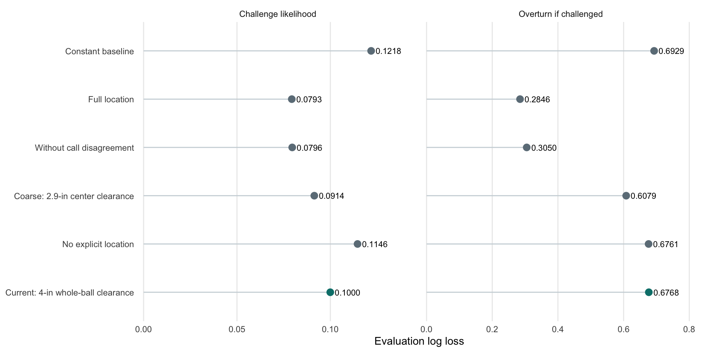
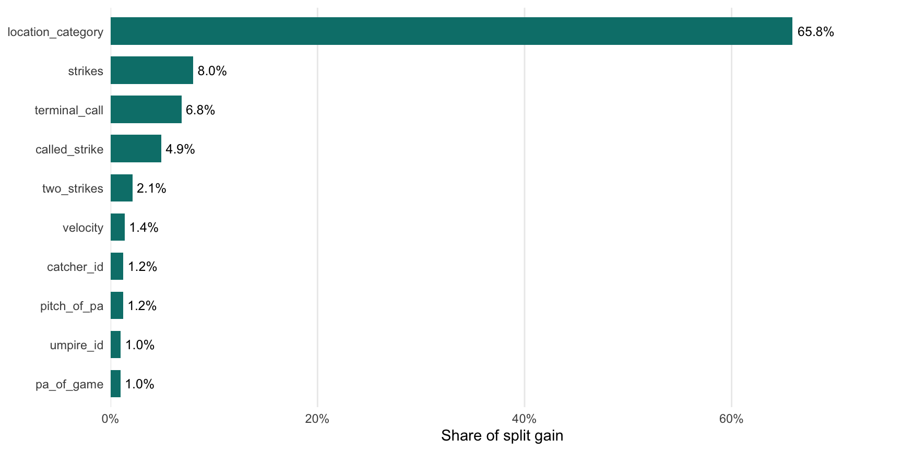

| Task | Baseline | Current |
|---|---|---|
| Challenge likelihood | 0.12183 | 0.09995 |
| Overturn if challenged | 0.69294 | 0.67681 |
| Challenging team | 0.69264 | 0.01749 |
ABS Challenge Likelihood
Model development, feature experiments, and next steps
Seattle Mariners
Baseball
XGBoost
A Seattle Mariners project modeling whether a pitch will be challenged, which team will challenge, and whether the call will be overturned, using R and XGBoost.
Introduction
Challenge it or let it go? Every close pitch forces that choice, and the secret sauce behind a good ABS challenge is knowing the difference between a call that looks wrong and a call that is actually wrong. A player might disagree with the umpire without ever asking for a review, and even a challenge that does get requested is no guarantee the call gets flipped.
That makes three different questions: Will the pitch be challenged? Which team will challenge it? And will the challenge succeed? This paper aims to treat them separately. Using only information available after the umpire’s original call, I can estimate the probability of each outcome and show how much of that signal comes from where the pitch crossed the plate.
Data
The training data covers 309,063 called pitches across 2,008 games. Challenges are rare, showing up on only about 2.7% of those pitches, which makes predicting them a highly imbalanced problem. Of the pitches that were challenged, about 49% were overturned, which is close to a coin flip.
Before building anything, I checked pitch identifiers, missing values, and whether the outcome fields agreed with each other. One detail matters here: a missing success label on an unchallenged pitch means the outcome is unknown, not that a challenge failed. Those pitches help train the challenge-likelihood model, but they are left out of the success and challenging-team models. The workbook also labels the success field is_success, while the assignment text calls it is_successful.
Missing numeric values were filled with medians from the fitting data, and I added indicators to flag which measurements were missing. Categorical predictors got a fallback level for any category the model had not seen before.
Methodology
I settled on three separate models in R, one for each question:
| Task | Training population | Output |
|---|---|---|
| Any challenge | All labeled pitches | p_challenge |
| Challenging team | Challenged pitches | challenge_source |
| Overturn if challenged | Challenged pitches with observed outcomes | p_success_g_challenge |
Every model predicts at the same moment: after the umpire’s original call, but before any challenge. That makes the original ball-or-strike call a fair predictor. One catch is that the challenging-team model cannot tell whether a catcher or a pitcher started a defensive challenge, since the labels only identify the team.
Games were split into roughly 60% fitting, 20% tuning, and 20% evaluation groups, with the coaching-report game held out separately. Splitting by game keeps pitches from the same game on one side only. Since the supplied fields do not include dates, this tests how well the models handle new games, not how they would hold up in a future season.
For each target, I compared a constant-probability baseline, ridge logistic regression, and XGBoost. The challenging-team task also had a simple baseline built on the original call. Ridge penalties, tree depth, and boosting iterations were picked using tuning-set log loss, and XGBoost came out on top for all three targets. Each selected configuration was then refit on all labeled observations for its task to produce 34,972 test predictions.
Model Feature Sets
The model draws on count, inning, score, pitch sequence, velocity, movement, extension, handedness, and catcher, umpire, and venue information. It also includes the original umpire call, along with indicators for two strikes, three balls, and a potential strike-three or ball-four call.
Pitch location took the most trial and error. I started with precise pitch coordinates and a buffer around the strike zone to approximate uncertainty in how players judge a pitch. However, I felt this still gave the model a level of spatial precision that players would struggle to match. I therefore experimented with a simpler location feature that distinguishes obvious calls from pitches closer to the boundary.
The current version uses four categories: obvious strike, obvious ball, borderline, and unknown. An obvious strike requires the entire ball to clear every supplied zone edge inward by at least four inches. An obvious ball requires the same clearance outside at least one edge. With a 1.5-inch ball radius, this means 5.5 inches of clearance from the ball’s center. All other valid locations are borderline, while missing or invalid locations are unknown.
Results
Before getting into model evaluation, these are the diagnostics I am using:
- Baseline: The log loss from predicting one constant probability for every pitch, without using any features.
- Log loss: The primary metric, since my objective is to produce useful probabilities. It punishes confident predictions that turn out wrong, and lower is better.
- Brier score: The average squared gap between each predicted probability and what actually happened. Lower is better here too.
- Calibration plots: A check on whether predicted probabilities match how often the outcome really occurs.
Accuracy alone would be misleading. Predicting “no challenge” on every pitch would already be right most of the time.
The current challenge model beat its constant baseline by about 18%. The overturn model showed only a small improvement.

The feature experiments exposed a real tradeoff. With the original detailed location features, overturn log loss was 0.28464. Once that information was removed, performance dropped substantially. So the current simplified model is not the strongest version I tested. What it does show is how much of a successful challenge comes down to precise pitch location.
Challenging-team prediction stayed strong in every experiment, and the reason is simple: the original call points straight to the team that would benefit from a reversal. That makes it a much easier task than predicting whether a challenge happens or succeeds.

The coarse location category accounts for roughly 66% of the challenge model’s split gain, so the trees lean on it heavily. Since split gain says nothing about direction, it does not reveal whether a given category raises or lowers a pitch’s challenge probability. Correlated predictors can also split importance among themselves.
Limitations & Future Work
A key limitation of the data is the absence of information on how individual umpires call their specific strike zones. The model includes the identity of the umpire behind the plate, but it has no information on the shape of that umpire’s zone. Umpires do not all call the edges the same way, and a pitch on the border of the zone may be a routine strike for one umpire and a ball for another.
With access to this data, I could build location features that describe where a pitch crossed the plate relative to the zone, such as whether it was high, low, or to a particular side. I could then compare those locations against how each umpire tends to call them. A pitch that is borderline in the strict sense may be a safe call in one part of the zone for a given umpire and a likely miss in another. Depending on how an umpire calls their strike zone, these tendencies could have a substantial impact on how a player decides whether to challenge.
The number of baserunners and their locations on the bases would also be valuable to include. These factors change how likely a team is to challenge a pitch in order to keep the at-bat going. A strike three or ball four with runners on base carries very different stakes than the same call with the bases empty, and a team with a runner in scoring position has more to gain from extending the at-bat. Challenge decisions are strategic, and the current model has no view of the base state to reflect that.
Together, umpire zone tendencies and base states would give the model a closer view of the situation a player faces when deciding whether to challenge, and could improve both challenge likelihood and overturn predictions.